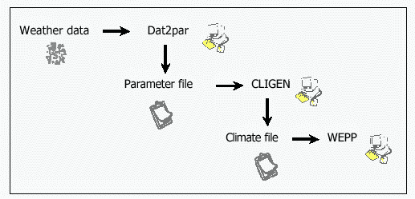
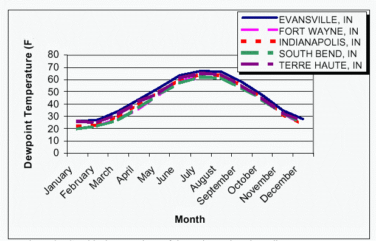
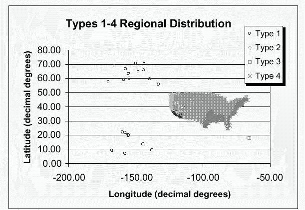

Rocky Mountain Research Station
Moscow Forestry Sciences Laboratory
1221 South Main Street, Moscow, ID 83843
https://forest.moscowfsl.wsu.edu/
| USDA Forest Service | Rocky Mountain Research Station | Moscow FSL | Soil and Water Engineering |
|---|
Keywords: CLIGEN, WEPP, climate, weather

Figure 1. The CLIGEN data path
Table 1.--Example effect of La Crosse, WI, values for MX .5 P all being 0.00.
Viroqua, WI, maximum 30 minute precipitation depth interpolated with bad La Crosse, WI, data MX .5 P 0.02 0.03 0.08 0.14 0.27 0.32 0.30 0.31 0.12 0.07 0.04 0.03 Viroqua, WI, maximum 30 minute precipitation depth interpolated without bad La Crosse, WI, data MX .5 P 0.10 0.20 0.37 0.82 1.25 1.30 1.39 1.48 0.64 0.35 0.34 0.19
Table 2 -- Dewpoint Stations with Corrected Latitude and Longitude Sandberg, CA
Washington, D.C.
Portland, ME
Blue Hill, MA
Albuquerque, NM
Binghamton, NY
Canton, NY
Winston Salem, NC
Pittsburgh, PA
Table 3 -- Wind Stations with no wind and no calm were removed Newhall, CA
Burney, CA
Fort Benning, GAEl Morro, NM
Killeen, TX
Table 4 -- Wind Stations with Corrected Latitude and Longitude Burbank, CA
Barber�s Point, HI
Jolon, CAFort Knox, KY
Tucson/Davis, AZ
Guam/Agana

Figure 2. Graphical comparison of dewpoint stations in Indiana

Figure 3. Geographical distribution of TYPE parameter for CLIGEN files.
USDA Soil Conservation Service. 1986. Urban Hydrology for Small Watersheds. Technical Release 55.
Western Regional Climate Center. 1998? WRCC -- Active Coop Station Data Inventory Listings, Old NCDC Cooperative Observer Network Inventory (1991). <https://www.wrcc.dri.edu/inventory/inventact.html>
Scheele, D.L.; Hall, D.E. 2000. Corrections and Improvements to the CLIGEN Climate Database. USDA Forest Service Rocky Mountain Research Station, Moscow Forestry Sciences Laboratory. May 18, 2000. 6 p. Modified June 2003.
|
|
USDA Forest Service Rocky Mountain Research Station Moscow Forestry Sciences Laboratory 1221 South Main Street, Moscow, ID 83843 https://forest.moscowfsl.wsu.edu/ |
|